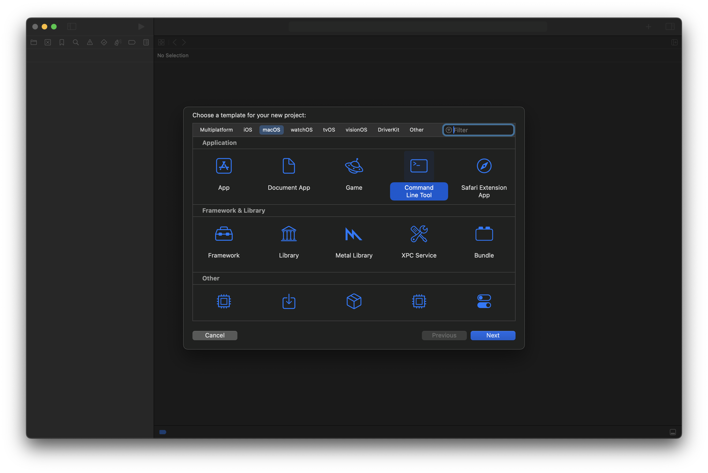

Introduction
In this tutorial, we will install SFML and create an Xcode project which builds and debugs our program. This will work on Intel and M-series Macs. We will be using Homebrew, a package manager for macOS. It should take 5-15 minutes once you have all required components installed.
SFML is an open-source, cross-platform multimedia library to provide a simple interface with graphics, audio, and input control in C++. SFML only supports 2-D graphics natively. View the details here: https://www.sfml-dev.org/
Required Software:
- Homebrew
- Xcode
Step 1 - Install Homebrew (~15 minutes)
If you do not have Homebrew installed, please open Terminal and run the following command. You can view full installation instructions atbrew.sh.
Warning: You will need sudo privileges when installing Homebrew.
/bin/bash -c "$(curl -fsSL https://raw.githubusercontent.com/Homebrew/install/HEAD/install.sh)"
Step 2 - Install SFML (1-5 minutes)
Use Homebrew to download and install SFML.
brew install sfml
Step 3 - Create an Xcode Project (1 minute)
- Open Xcode.
- Select Create New Project...
- Navigate to the macOS tab and select the Command Line Tool option. Then, click Next. 
- Give the Product Name, Team, and Organization Identifier (typically the reverse of a domain; i.e., com.example). Ensure the Language is set to C++. Then, click Next.

Step 4 - Link Libraries (5 minutes)
In this section, we will link the libraries. See below for the location of the libraries and their purpose.
If you cannot find the libraries, please seeTroubleshootingfor help!
Library Table
| M-series Mac Library Path | Intel Mac Library Path | Library Name | Library Purpose | Is Required? |
|---|---|---|---|---|
| /opt/homebrew/lib/libsfml-system.dylib | /usr/local/Homebrew/lib/libsfml-system.dylib | libsfml-system | System utilities and threading | Yes |
| /opt/homebrew/lib/libsfml-window.dylib | /usr/local/Homebrew/lib/libsfml-window.dylib | libsfml-window | Window management and input handling | Yes |
| /opt/homebrew/lib/libsfml-graphics.dylib | /usr/local/Homebrew/lib/libsfml-graphics.dylib | libsfml-graphics | 2D graphics rendering | Yes |
| /opt/homebrew/lib/libsfml-network.dylib | /usr/local/Homebrew/lib/libsfml-network.dylib | libsfml-network | Networking functionality | No |
| /opt/homebrew/lib/libsfml-audio.dylib | /usr/local/Homebrew/lib/libsfml-audio.dylib | libsfml-audio | Audio playback and processing | No |
Now, that we know what the libraries do, lets link the libraries.
- Click the + icon in the Frameworks and Libraries section.
- You will now see this screen which shows macOS Frameworks. Click Add Other... and select Add Files.
- Press Command + Shift + G. Now, type
/opt/homebrew/libfor M-series Macs or/usr/local/Homebrew/libfor Intel Macs. - Now, select
libsfml-graphics.<VERSION>.dylib,libsfml-system.<VERSION>.dylib, andlibsfml-window.<VERSION>.dylib. Select the version you would like, at the time of this tutorial, SFML 2.6.2 was released. You must select graphics, system, and window. Without these, you cannot create a GUI (Graphical User Interface). Optionally, follow this process again to link audio and networking. - You should see the libraries shown in Xcode. If your screen looks the same as below, everything linked correctly. Note: If the libraries do not appear, select another tab then return to General. This is a glitch with Xcode 16.0.


Step 5 - Include Header Files (5 minutes)
In this section, we will add a System Header Search Path. Without this step, the compiler will not know where the header files are.
If you cannot find the header paths, please seeTroubleshootingfor help!
If you used Homebrew to install SFML, see the following table.
| M-series Mac Include Path | Intel Mac Include Path |
|---|---|
| /opt/homebrew/include/ | /usr/local/Homebrew/include/ |
- Select the Build Settings tab.
- Ensure All and Combined are selected as such.
- Now, type in the filter field "Header Search Path".
- Double click on the System Header Search Paths line.
- Double click on the top line of the pop-over. Type
/opt/homebrew/include/. If you manually located the lib folder, it will be the same root path up tolib. Simply changelibtoinclude. For example, if your path is/home/user1/sfml/lib/..., your include folder should be/home/user1/sfml/include. - Click the main window and your project will be configured. You should be ready to use SFML now. Build the project with Command + B.


Step 6 - Create Hello, World! Project (2 minutes)
In this section, we will modify one of the starter projects SFML has on their website.
- Open main.cpp.
- Copy and paste the code below!
- When you successfully run the program, your Xcode window will look something like this.
- Congratulations! You have built your first SFML project in Xcode!
- You will likely receive an error every once in a while. This states building could produce unreliable results. To resolve this, you need to clean the project. In the menu bar, go to
Product > Clean Build Folder...; the keyboard shortcut is Command + Shift + K
#include <iostream>
#include <SFML/Graphics.hpp>
int main(int argc, const char * argv[]) {
// Create a window
sf::RenderWindow window(sf::VideoMode(700, 550), "My First SFML App");
sf::Vector2u windowSize = window.getSize();
const double ballSize = 50;
// Create a ball
sf::CircleShape ball(ballSize);
ball.setFillColor(sf::Color::Magenta);
// Center ball on screen, depending on window and ball size
ball.setPosition(windowSize.x / 2 - ballSize,
windowSize.y / 2 - ballSize);
// Main loop
while (window.isOpen()) {
sf::Event event;
while (window.pollEvent(event)) {
if (event.type == sf::Event::Closed) {
window.close();
}
}
window.clear(sf::Color::Black);
window.draw(ball);
window.display();
}
return 0;
}
Troubleshooting
Cannot Locate SFML
- Attempt to locate SFML by running `brew info`.
- If Brew did not install it correctly, run brew doctor. If this command returns error(s) you need to address, please referencebrew.shfor assistance.
- Attempt to reinstall SFML.
- Attempt Step 1 again.
- Use find to locate the SFML libraries.
What it does:- Search from the root path (/).
- Look for a file type (-type f) and ignore directories.
- Match the pattern (libsfml-*.dylib) ignoring case.
find / -type f -iname "libsfml-*.dylib"
brew info sfml
brew doctor
brew reinstall --force sfml
Determine My Architecture
Run the following command, then reference the table to see what your architecture is.
uname -m
| Result | Architecture Type |
|---|---|
| arm64 | M-series Mac |
| x86_64 | Intel Series Mac |
Summary
Today, we installed SFML using Homebrew and configured an Xcode project to use the SFML library. In Xcode, we learned how to embed libraries and add header search paths. In terminal, we learned how to locate libraries usingfindand determine our architecture usinguname.
Downloads:
Created: Nov. 26, 2024
Updated: Feb. 04, 2025